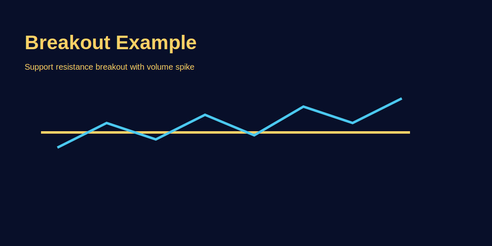

Breakout Trading Explained
Problem-based introduction
Breakouts look tempting but many are false. This guide explains how to plan breakouts, confirm, and manage them using GOLD (XAU/USD) examples.
Step-by-step explanation
- Identify consolidation or key level.
- Wait for clean breakout with volume or momentum confirmation.
- Manage risk with stop-loss under consolidation or breakout wick.
Real trading logic (GOLD example)
For XAU/USD, a range breakout with increased volume during London session is more reliable; place stop under range and scale out partials at measured targets.
Image-based examples (mandatory)
Example shows clean breakout and retest entry.
Common Mistakes
- Chasing breakout without confirmation.
- Placing stop too tight and getting stopped out by noise.
Pro Tips
- Prefer breakouts during high-liquidity sessions and confirm with volume.
- Use partial scaling to reduce emotional pressure.
Risk Warning
False breakouts are common—manage size and always have an exit plan.
SEO FAQs
- 1. Breakout safe kaise karein?
- Confirm with volume, higher timeframe trend, or retest.
- 2. Kya breakout scalping ke liye sahi hai?
- Depends on strategy and session liquidity; scalpers need tight cost control.